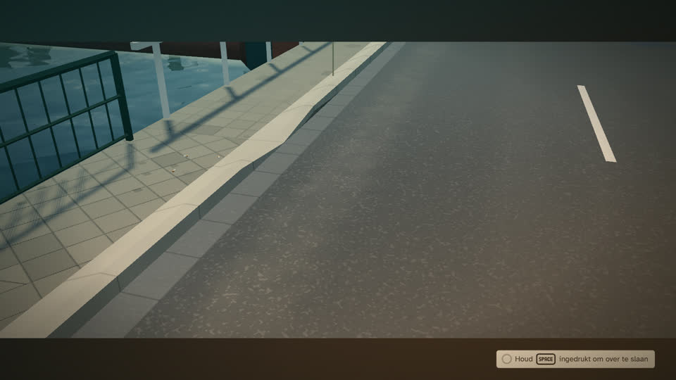
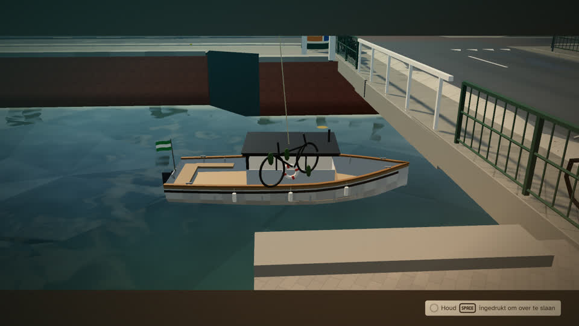

Het routepunt van het kanaal lag op de kade: de boot en de fiets stonden op droog land (op waterhoogte, onder de straat) en de camera filmde een lege weg. Nu wordt het punt naar het water geschoven en staat de camera op de kade.


Niet bekeken en niet gewijzigd: de overige shots van de trailer en de keuken (bekeken, zagen er goed uit) en de verhuisdag (Escapade met matras op het dak en lekke band, bekeken, klopt).